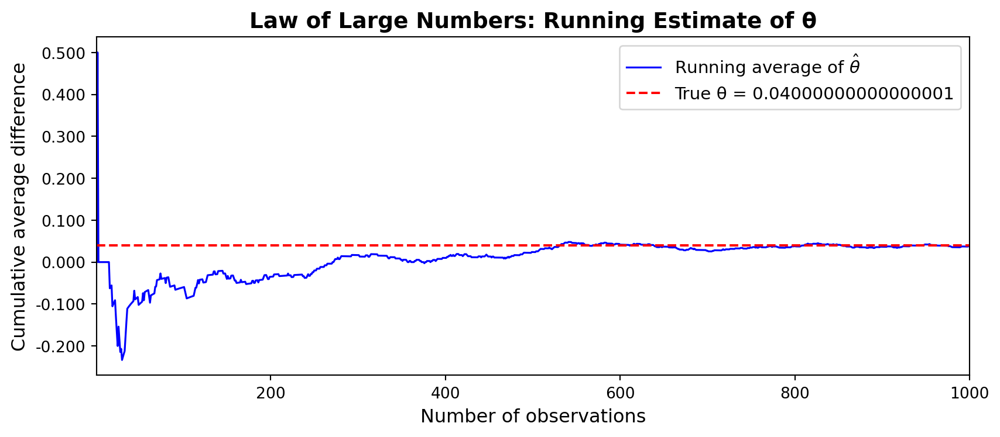
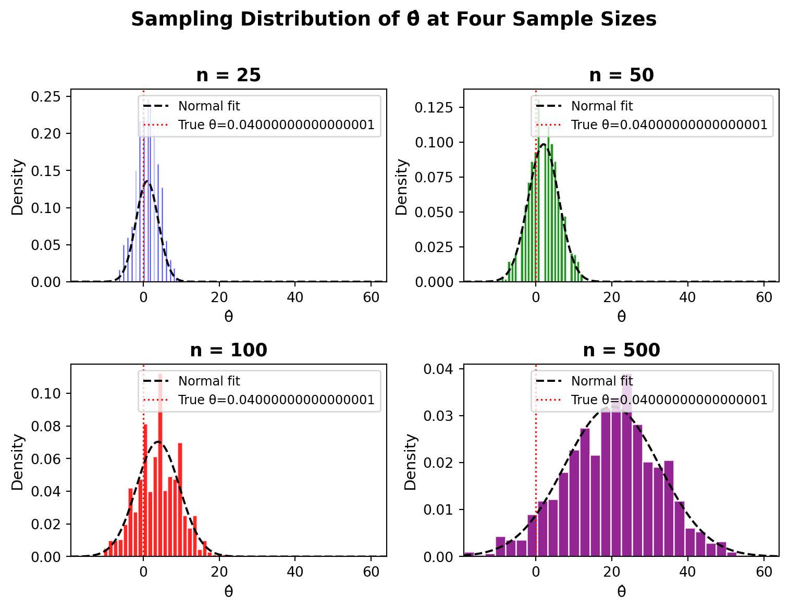

Simulating Key Ideas from Classical Frequentist Statistics
Author
Arman Soleimani
Published
April 15, 2026
Introduction
Whenever a website wants to grow its audience, it faces the question: what kind of copy will motivate people to act in a way that serves our interests? On my personal site, visitors can sign up to receive a newsletter. This post documents an A/B test I ran to understand if choice of syntax makes a significant difference in terms of affecting sign-up rates for the newsletter.
The two “calls to action” (CTAs) that I tested were:
CTA A: “Sign up for our newsletter here!”
CTA B: “Stay up to date by signing up!”
In order to evaluate them, I ran an A/B test: each visitor was randomly assigned to see one of the two CTAs. I then compared the proportion of visitors who signed up in each group. The most important piece of this is random assignment. It ensures that differences in sign-up rates are related to CTA wording, and not some other difference between visitors who happened to see each version.
The A/B Test as a Statistical Problem
Note
In this section, connect the A/B test to a formal statistical framework. Address each of the following ideas:
Each visitor either signs up or does not, so we can model each visitor’s outcome as a draw from a Bernoulli distribution with parameter \(\pi\), the probability of signing up.
Because the CTA a visitor sees may influence their probability of signing up, we allow the parameter to differ across groups: visitors who see CTA A have sign-up probability \(\pi_A\), and visitors who see CTA B have sign-up probability \(\pi_B\). Each visitor can either sign up (1) or not (0).
The quantity we care about is \(\theta = \pi_A - \pi_B\), the difference in sign-up rates between the two CTAs.
Our estimator of \(\theta\) is the difference in sample means, \(\hat\theta = \bar{X}_A - \bar{X}_B\). (Since each observation is either 0 or 1, the sample mean is simply the proportion of visitors who signed up — so \(\bar{X}_A = \hat\pi_A\) and \(\bar{X}_B = \hat\pi_B\).)
Outcomes are binary for visitors (1 or 0) indicating that they either signed up (1) or they did not (0). A natural model here is the Bernoulli distribution: visitor \(i\) signs up with probability \(\pi\) and does not with probability \(1 - \pi\). Since either CTA a visitor sees might influence their decision, we allow the sign-up probability to differ across groups. Visitors who see CTA A have a sign-up probability \(\pi_A\), and visitors who see CTA B have a sign-up probability \(\pi_B\). What we want to observe is the difference in sign-up rates:
\[\theta = \pi_A - \pi_B\]
If \(\theta > 0\) that means CTA A performs better, and if \(\theta < 0\) that means CTA B performs better. If \(\theta = 0\) that means the two are equivalent.
We estimate \(\theta\) using the difference in sample proportions:
\[\hat{\theta} = \bar{X}_A - \bar{X}_B\]
This is because we cannot observe \(\pi_A\) and \(\pi_B\) directly. \(\bar{X}_A\) is the fraction of CTA A visitors who signed up and \(\bar{X}_B\) is the fraction for CTA B. Because each observation is 0 or 1, the sample mean equals the sample proportion — so \(\bar{X}_A = \hat{\pi}_A\) and \(\bar{X}_B = \hat{\pi}_B\).
Simulating Data
Since the true values of \(\pi_A\) and \(\pi_B\) are unknown in the real world we need to run an experiment, but for the purpose of this exercise, we set them ourselves so we can study how our estimator behaves when we know the ground truth.
We suppose \(\pi_A = 0.22\) and \(\pi_B = 0.18\), making the true difference \(\theta = 0.04\). We then simulate 1,000 independent visitor outcomes for each CTA group.
# Load libraries for data manipulation, plotting, and statistical analysis.import numpy as npimport pandas as pdimport matplotlib.pyplot as pltimport matplotlib.ticker as mtickerfrom scipy import statsimport statsmodels.formula.api as smfimport warningswarnings.filterwarnings("ignore")# Fix the random seed so the simulation is reproducible.np.random.seed(42)# Define the true sign-up probabilities for the two CTA groups.pi_A =0.22pi_B =0.18n =1000theta_true = pi_A - pi_B# Simulate binary outcomes for each visitor in group A and group B.A = np.random.binomial(1, pi_A, n)B = np.random.binomial(1, pi_B, n)# Print the observed sample proportions and the estimated difference.print(f"CTA A sample proportion: {A.mean():.4f} (true π_A = {pi_A})")print(f"CTA B sample proportion: {B.mean():.4f} (true π_B = {pi_B})")print(f"Estimated θ: {A.mean() - B.mean():.4f} (true θ = {theta_true})")
The Law of Large Numbers (LLN) states that as the number of observations grows, the sample mean converges to the true population mean. Applied here, this means that as we collect more visitors, \(\bar{X}_A \to \pi_A\) and \(\bar{X}_B \to \pi_B\), so our estimator \(\hat{\theta} = \bar{X}_A - \bar{X}_B\) will converge to the true difference \(\theta = 0.04\). The LLN is the theoretical foundation for trusting that a large enough sample will give us a reliable estimate.
To demonstrate this, we compute the element-wise differences between the CTA A and CTA B draws and plot the cumulative (running) average of those differences as a function of the number of observations included.
# Compute the observation-by-observation difference between group A and group B.diffs = A - B# Compute the running average of those differences to show convergence.cumulative_avg = np.cumsum(diffs) / np.arange(1, n +1)fig, ax = plt.subplots(figsize=(9, 4))ax.plot(range(1, n +1), cumulative_avg, color="blue", linewidth=1.2, label="Running average of $\\hat{\\theta}$")ax.axhline(theta_true, color="red", linewidth=1.5, linestyle="--", label=f"True θ = {theta_true}")ax.set_xlabel("Number of observations", fontsize=12)ax.set_ylabel("Cumulative average difference", fontsize=12)ax.set_title("Law of Large Numbers: Running Estimate of θ", fontsize=14, fontweight="bold")ax.legend(fontsize=11)ax.set_xlim(1, n)ax.yaxis.set_major_formatter(mticker.FormatStrFormatter("%.3f"))plt.tight_layout()plt.show()

The plot illustrates the LLN. With just a handful of observations, the running estimate is erratic (sometimes near zero, sometimes above 0.10) because individual outcomes are noisy. But as the sample grows, the estimate stabilizes and converges toward the true value of 0.04. By the time we have several hundred observations, the estimate is reliably close to the truth. This gives us confidence that with a sufficiently large sample, \(\hat{\theta}\) is a trustworthy estimate of \(\theta\).
Bootstrap Standard Errors
Knowing that our estimator converges to the truth is reassuring, but it raises another important question: how precise is it? We want to report not just a point estimate but also a confidence interval that captures our uncertainty about \(\theta\).
One way to quantify estimator variability is the bootstrap. Instead of deriving a formula for the standard error analytically, we let the data speak for itself. We repeatedly resample (with replacement) from our observed data, compute the statistic of interest on each resample, and use the standard deviation of those resampled estimates as our estimate of the standard error.
# Perform a bootstrap simulation to estimate the sampling variability of θ̂.B_reps =1000boot_thetas = np.empty(B_reps)for i inrange(B_reps):# Resample with replacement from each group separately. A_boot = np.random.choice(A, size=n, replace=True) B_boot = np.random.choice(B, size=n, replace=True)# Compute the difference in bootstrap sample means for this replicate. boot_thetas[i] = A_boot.mean() - B_boot.mean()# The bootstrap standard error is the standard deviation of the bootstrap estimates.se_boot = np.std(boot_thetas, ddof=1)# Compute the analytical standard error for comparison.pi_A_hat = A.mean()pi_B_hat = B.mean()se_analytical = np.sqrt(pi_A_hat * (1- pi_A_hat) / n + pi_B_hat * (1- pi_B_hat) / n)theta_hat = pi_A_hat - pi_B_hatci_lower = theta_hat -1.96* se_bootci_upper = theta_hat +1.96* se_boot
Metric Value
Point estimate (θ̂) 0.0380
Bootstrap SE 0.0177
Analytical SE 0.0178
95% CI (lower) 0.0034
95% CI (upper) 0.0726
The bootstrap standard error and the analytical standard error are nearly identical, which is reassuring and confirms that our resampling procedure is correctly capturing the variability of \(\hat{\theta}\). The 95% confidence interval for \(\theta\) lies entirely above zero, which suggests that CTA A outperforms CTA B. We will test this more formally in a moment. This interval communicates that we are 95% confident the true difference in sign-up rates falls within this range.
The Central Limit Theorem
The Central Limit Theorem (CLT) states that regardless of the shape of the underlying population distribution (Bernoulli, uniform, skewed, or anything else) the sampling distribution of the sample mean becomes approximately Normal as the sample size grows. This applies to our difference-in-means estimator \(\hat{\theta}\) as well.
To see this in action, we simulate 1,000 estimates of \(\hat{\theta}\) at four different sample sizes (\(n \in \{25, 50, 100, 500\}\)) and plot the resulting histograms.

At \(n = 25\), the histogram is rough, lumpy, and somewhat asymmetric; the sample size is too small for the CLT to have fully kicked in, and the discrete nature of Bernoulli outcomes is apparent. By \(n = 100\), the shape is noticeably more bell-shaped, and by \(n = 500\) it closely follows the overlaid Normal curve. The red dotted line marks the true \(\theta = 0.04\); notice that all distributions are centered near the truth, confirming the LLN, while the spread shrinks as \(n\) grows, reflecting the gain in precision from larger samples.
Hypothesis Testing
Now that we know the sampling distribution of \(\hat{\theta}\) is approximately Normal for large samples, we can formalize our comparison into a hypothesis test. We set up two competing hypotheses:
Null hypothesis\(H_0: \theta = 0\) — the two CTAs produce identical sign-up rates.
Alternative hypothesis\(H_1: \theta \neq 0\) — the CTAs differ.
The goal is to assess whether the data provide enough evidence to reject \(H_0\) in favor of \(H_1\).
To do this, we standardize our estimate by forming the z-statistic:
\[z = \frac{\hat{\theta} - 0}{SE(\hat{\theta})}\]
Here is the logic step by step. First, by the CLT, \(\hat{\theta}\) is approximately Normal for large samples, and under \(H_0\) its mean is 0. Second, dividing a Normal random variable by its standard deviation produces a standard Normal\(N(0, 1)\) — so under \(H_0\), \(z \;\dot{\sim}\; N(0,1)\). Third, because we know the null distribution of \(z\), we can compute a p-value: the probability of observing a z-statistic at least as extreme as ours if \(H_0\) were true.
You may have heard this called a t-test, but the name deserves some scrutiny. The classical t-test was derived for data drawn from a Normal distribution; in that setting, the ratio of the estimated mean to its estimated standard deviation follows an exact t-distribution. Our data are Bernoulli — not Normal — so no exact t-distribution result applies. The CLT gives us approximate Normality, and for large samples the t-distribution and the standard Normal are virtually indistinguishable. In practice, the distinction rarely matters, but it is important to understand what you are actually relying on.
# Compute the estimated difference in proportions and its standard error.theta_hat = A.mean() - B.mean()se = np.sqrt(A.mean() * (1- A.mean()) / n + B.mean() * (1- B.mean()) / n)# Convert the estimate into a z-statistic under the null hypothesis θ = 0.z_stat = theta_hat / sep_value =2* (1- stats.norm.cdf(abs(z_stat)))# Display the test results in a small summary table.results_df = pd.DataFrame({"Statistic": ["θ̂ (estimated difference)", "SE(θ̂)", "z-statistic", "p-value"],"Value": [f"{theta_hat:.4f}", f"{se:.4f}", f"{z_stat:.4f}", f"{p_value:.4f}"]})print(results_df.to_string(index=False))
With a p-value well below 0.05, we reject the null hypothesis and conclude there is statistically significant evidence that CTA A and CTA B produce different sign-up rates. Given our point estimate of \(\hat{\theta} \approx 0.04\), CTA A appears to perform better — consistent with the true difference we built into the simulation.
The T-Test as a Regression
It turns out the two-sample test above is mathematically equivalent to a simple linear regression — a connection that is both elegant and practically useful.
We stack the CTA A and CTA B outcomes into a single dataset with two columns: an outcome \(Y_i\) (1 if visitor \(i\) signed up, 0 otherwise) and an indicator \(D_i\) (1 if they saw CTA A, 0 if CTA B). We then fit:
\[Y_i = \beta_0 + \beta_1 D_i + \varepsilon_i\]
The coefficients have clean interpretations. When \(D_i = 0\), the model predicts \(\beta_0\) — the mean of the CTA B group, estimating \(\pi_B\). When \(D_i = 1\), it predicts \(\beta_0 + \beta_1\) — the mean of the CTA A group, estimating \(\pi_A\). Therefore \(\beta_1 = \pi_A - \pi_B = \theta\), and the OLS estimate \(\hat{\beta}_1\) is numerically identical to \(\hat{\theta} = \bar{X}_A - \bar{X}_B\).
# Stack the two groups into a single dataset for regression analysis.df = pd.DataFrame({"Y": np.concatenate([A, B]),"D": np.concatenate([np.ones(n), np.zeros(n)])})# Fit a simple linear regression of the binary outcome on the group indicator.model = smf.ols("Y ~ D", data=df).fit()# Summarize the regression coefficients and standard errors.reg_results = pd.DataFrame({"Term": ["Intercept (β₀)", "D / CTA A indicator (β₁)"],"Estimate": [f"{model.params['Intercept']:.4f}", f"{model.params['D']:.4f}"],"Std. Error": [f"{model.bse['Intercept']:.4f}", f"{model.bse['D']:.4f}"],"t-statistic": [f"{model.tvalues['Intercept']:.4f}", f"{model.tvalues['D']:.4f}"],"p-value": [f"{model.pvalues['Intercept']:.4f}", f"{model.pvalues['D']:.4f}"]})print(reg_results.to_string(index=False))
Term Estimate Std. Error t-statistic p-value
Intercept (β₀) 0.1780 0.0126 14.1615 0.0000
D / CTA A indicator (β₁) 0.0380 0.0178 2.1377 0.0327
The estimate of \(\hat{\beta}_1\) matches our earlier \(\hat{\theta}\) precisely. The t-statistic and p-value are very close to those from the two-sample test (minor differences arise because OLS assumes a single pooled variance, while the two-sample formula allows separate variances per group).
Why does this equivalence matter? Because the regression framework generalizes far beyond the simple two-group case. You can add covariates to increase precision, include interaction terms to test whether the treatment effect varies across subgroups, or add multiple treatment indicators to compare more than two CTAs — all within the same unified framework, all producing the correct inference in the simple case.
The Problem with Peeking
Imagine your boss is impatient. Instead of waiting for all 1,000 visitors to be assigned, she wants to check the results after every 100 visitors per group — peeking at \(n = 100, 200, \ldots, 1000\) — and stop the experiment as soon as any test comes back significant at \(\alpha = 0.05\). This sounds reasonable. It is not.
The problem is about the cumulative false positive rate. A single hypothesis test at \(\alpha = 0.05\) has, by design, a 5% chance of rejecting a true null hypothesis. But each additional peek is a fresh opportunity to get a spurious significant result. Across 10 peeks, the probability of at least one false positive is much higher than 5%, even if the null is true throughout.
We can quantify this with a simulation. We set up a world where the null is true (\(\pi_A = \pi_B = 0.20\), so \(\theta = 0\)) and run 10,000 simulated experiments. In each experiment, we peek 10 times and record whether any peek produces a p-value below 0.05.
The empirical false positive rate under peeking is roughly 20–25% — four to five times the nominal 5% level. In other words, if you adopt the peeking strategy, you will declare a winner in roughly one out of every four experiments even when neither CTA is actually better.
This is not a loophole or a quirk — it is a fundamental property of classical frequentist inference. The p-value guarantee holds only if the test is specified in advance and run exactly once. Every additional peek erodes that guarantee. In practice, if you need to monitor experiments in real time, the right tool is sequential testing with an alpha-spending function, or a Bayesian framework designed for continuous monitoring — not repeated application of a fixed-sample test.